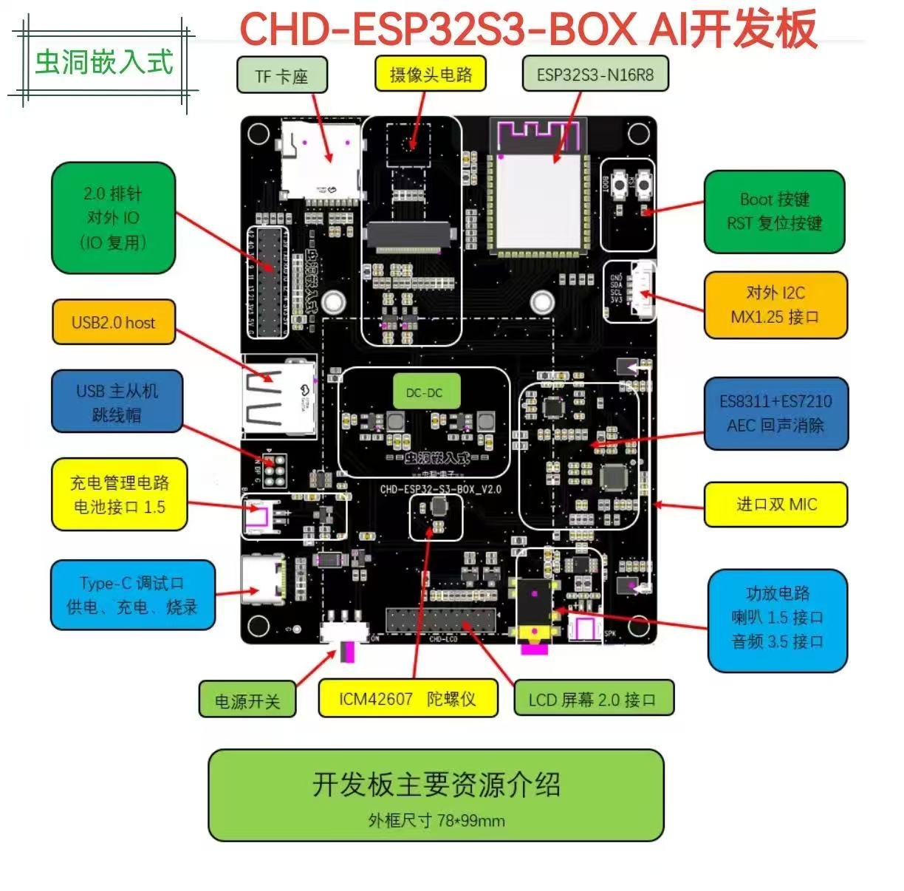
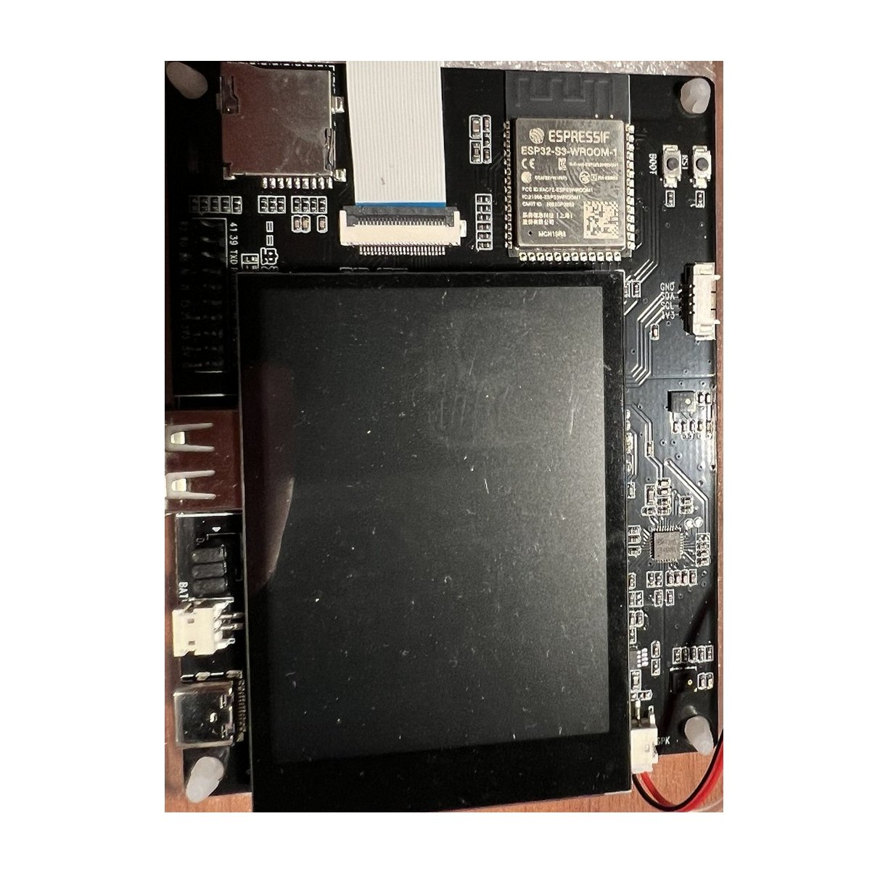
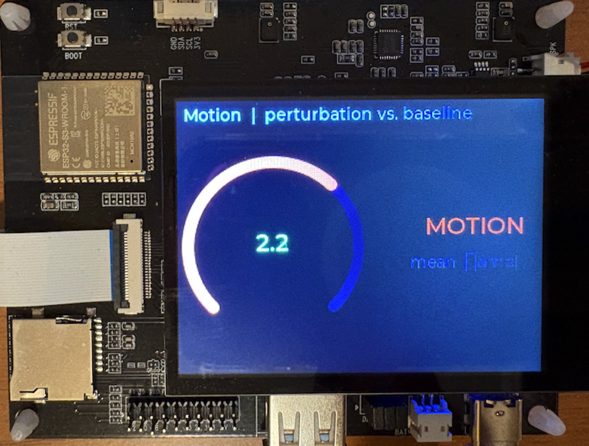
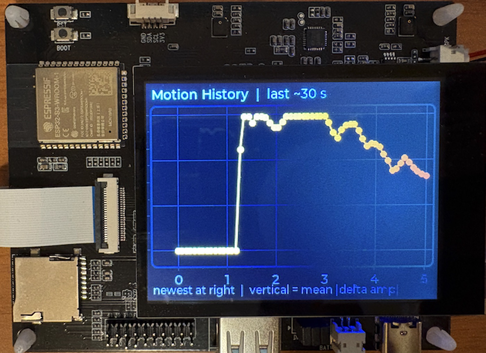
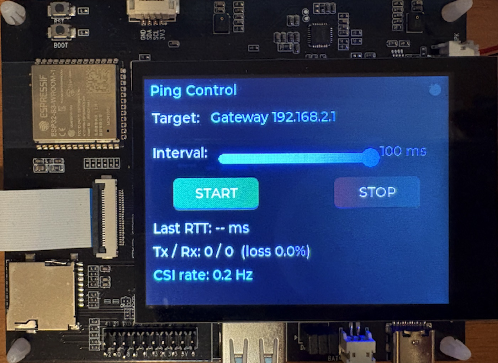
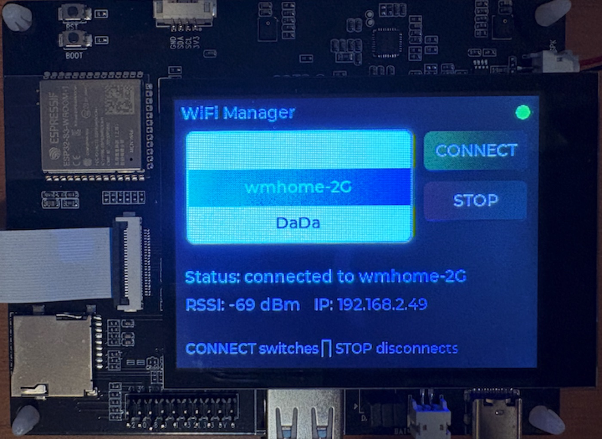
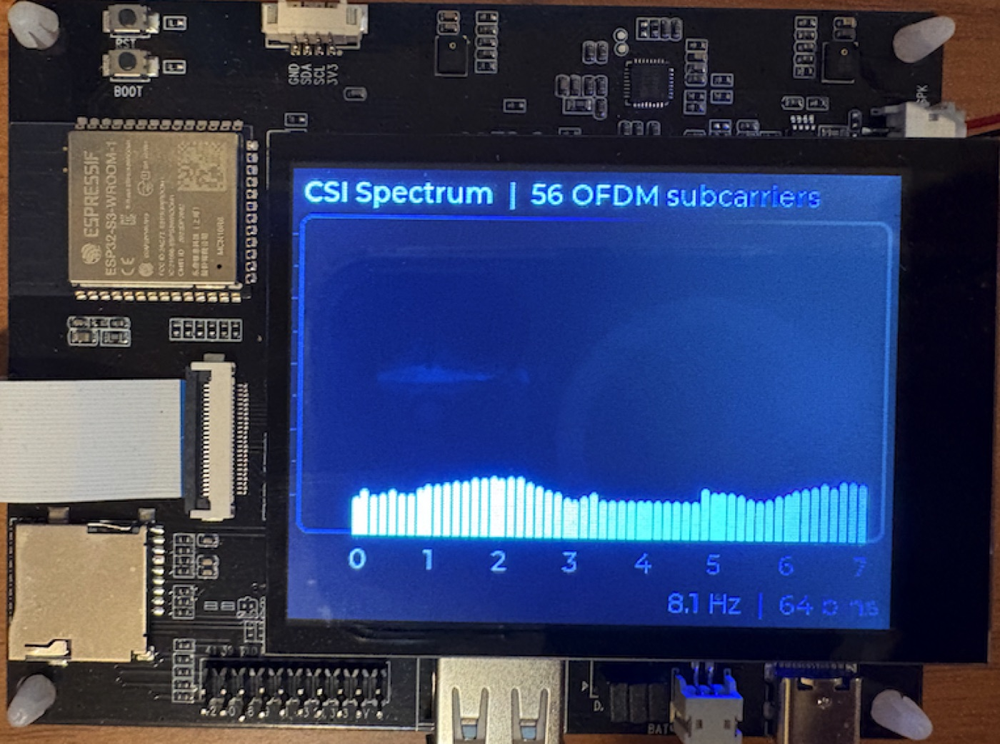
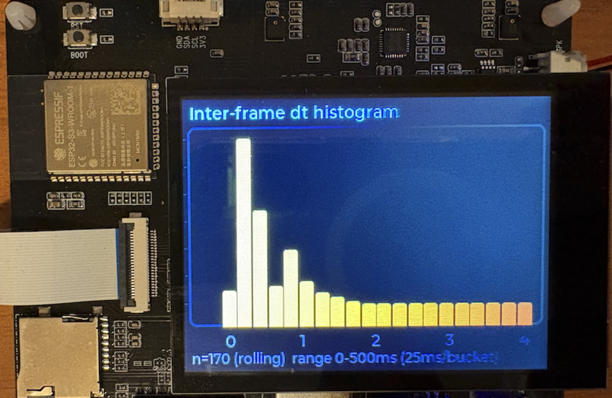
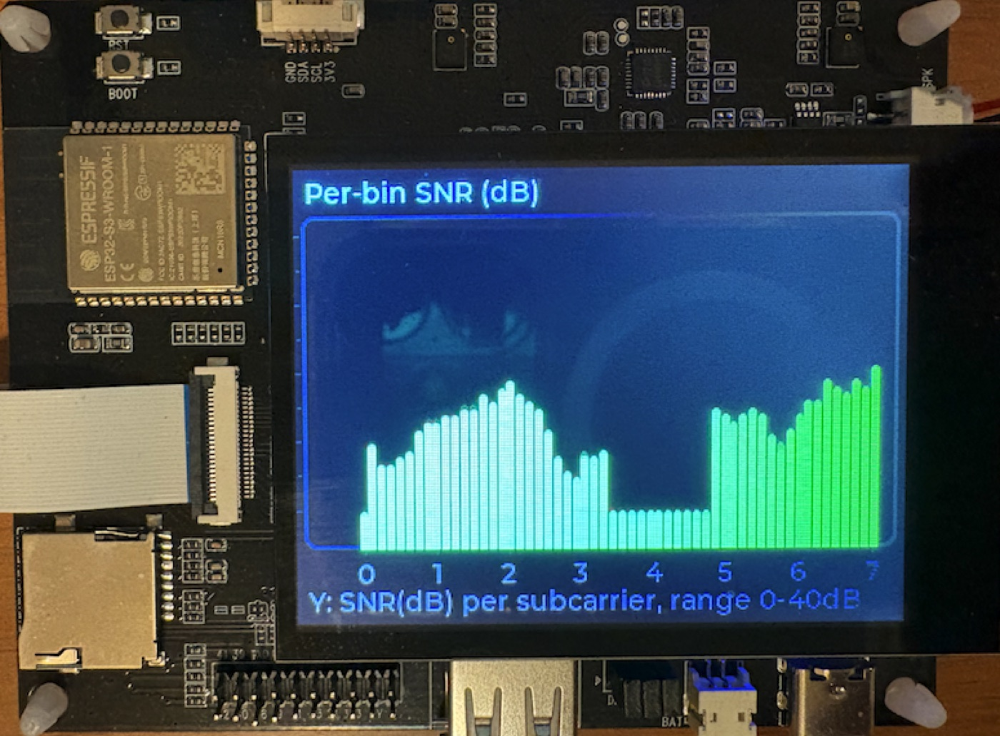
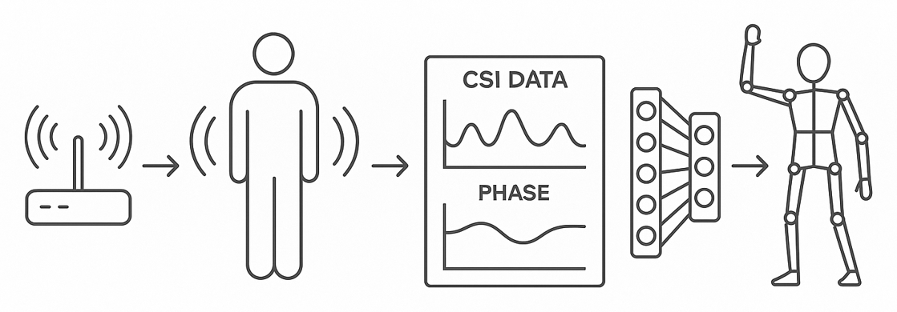

摘要
装摄像头虽然能看清屋里的情况,但会侵犯家人的隐私;装门磁或红外传感器虽然保护了隐私,却只能知道"有没有人经过",分不清人"在不在动、动得大不大"。为了解决这个矛盾,我做了一套不拍任何画面 的室内人体活动感知装置——"空中的脚印"。
家里 Wi-Fi 路由器发出的无线电波,碰到墙壁、家具和人体都会反射回来。只要有人走动,接收端收到的信道状态信息(CSI, Channel State Information,可以理解成无线电波穿过房间后的"体检报告") 就会跟着波动。我的作品用一块乐鑫 ESP32-S3 开发板(一块带芯片、能自己运行程序的小电路板)作为核心,在开源项目 RuView[7] (公开源代码、允许大家学习改造的项目)的基础上,加入了三个关键改进:"自动锁定单一链路(MAC 过滤,MAC 地址就像每台网络设备独一无二的身份证号)+ 主动 ping 控速(ping 就像朝路由器喊一声'在吗'并让它回话)+ 逐子载波自适应基线(EWMA,一种更看重最近变化、慢慢更新记忆的计算方法)识别"。这样一来,开发板就像一个小小的"边缘 AI"(不用联网找大电脑帮忙、在设备本地就能自己判断的智能程序),能自己记住房间安静时的信号样子,再根据信号偏离的程度,实时判断出"静止 / 有人 / 剧烈运动",并在触摸屏上用 7 个页面展示出来。实验证明:在距离 1.5–3 米、信号强度(RSSI)约 −45~−60 dBm(数值越接近 0,信号越强)的条件下,装置能稳定区分这三种状态,采样快慢也能跟着 ping 间隔精准调节(CSI 频率 ≈ 1000 / 间隔毫秒数)。整套装置成本约 100 元,全程零图像采集。
关键词
Wi-Fi 感知 信道状态信息 CSI 边缘智能
自适应学习 异常检测 隐私保护 ESP32-S3
一 研究背景这个课题,是从我们家一个真实的烦恼开始的。
家里有位奶奶一个人住。大家最担心的,就是万一她在屋里摔倒了,或者好半天没动静,我们却一点都不知道。为了这件事,我们想过好几种办法,但都不太满意:
装摄像头 —— 奶奶很不情愿,她说"不想整天被人盯着看"。摄像头会把真实画面全拍下来,牺牲了太多隐私。装门磁 / 红外 —— 只能知道"门开没开""刚才有没有人路过",根本看不出人在屋里到底动没动、动作是大还是小 。要是遇到"摔倒后一动不动"或者"长时间静止",它们几乎帮不上忙。
我就琢磨开了:现在家家户户都有 Wi-Fi 路由器,它的信号每时每刻都在屋里飞来飞去,人只要一走动,信号肯定会跟着变一变。那能不能让 Wi-Fi 信号自己当一个"看不见的感知器",既能知道屋里有没有人在动,又一张照片都不用拍呢?
我上网查资料发现,科学家们已经证实 Wi-Fi 的信道状态信息(CSI)可以用来感知人体活动,甚至还能用深度学习(让计算机模仿人脑多层神经网络去学习规律的技术)还原出人的动作姿态
[1][2] 。不过,那些研究大多得靠高性能电脑、专用网卡或者服务器才能跑起来。我就想挑战一下:能不能把这套本领
浓缩进一块百元级的小开发板里 ,做成一个我们初中生能亲手组装、拿到现场就能演示的实物?
二 研究目的
总目标 用一块现成的百元级开发板,搭配家里本来就有的 Wi-Fi 路由器,做出一个不用摄像头 也能感知屋里有没有人活动的实物装置,让"聪明好用"和"保护隐私"两全其美。
具体目标
能稳稳地分清"没人动 / 有人轻微活动 / 有人剧烈运动"三种情况。
全程零图像采集 ,绝对不记录任何能认出是谁的画面。
成本低(百元级),插上电就能独立运行,在比赛现场能直接演示。
把看不见、摸不着的无线电波,变成小屏幕上一眼就能看懂的图表和数字。
三 研究内容围绕"怎么让 Wi-Fi 看见动作"这个核心问题,我一步步完成了下面四部分工作。
① 感知原理验证 先测试 ESP32-S3 开发板能不能稳定抓到 56 个子载波(可以把一条 Wi-Fi 大马路想象成并排的 56 条小车道,每条车道都在传信号)的 CSI 数据,再验证人在旁边走动时,CSI 数字是不是真的会出现明显的波动。
② 单链路净化 设计"自动 MAC 过滤"功能,让开发板只听当前连接的这台路由器发来的信号,把邻居家穿墙过来的 Wi-Fi 干扰统统挡在外面,确保测到的只是"路由器↔装置"这一条干净的通道。
③ 主动控速 让开发板主动给路由器发 ping(心跳包,就像定时去拍拍路由器的肩膀说"回个话"),督促路由器不停回包,把每秒抓取数据的次数精准控制在 10–50 Hz(赫兹,代表每秒钟多少次),解决了"平时没人上网就没信号数据可测"的难题。
④ 智能识别与可视化 用逐子载波自适应基线的方法,把 CSI 的波动换算成活动等级(第六章 会详细讲),并设计了 7 个触摸屏页面,把无线信号、运动状态、历史曲线和采样质量实时画出来。
四 研究方法4.1 基本原理:把"回声"听出来
家里的 Wi-Fi 路由器一直在向四周发射无线电波。电波撞到墙壁、家具和我们人的身体,都会弹回来,就像对着山谷大喊一声会听到回声一样 。开发板收到的信号,其实是"直接飞过来的电波 + 四面八方弹回来的反射波"叠在一起的结果。这 56 条无线小车道(子载波)各自的强弱(幅度)和步调(相位)合在一起,就是信道状态信息 CSI [3][4] 。
人站着不动的时候,电波反射的路线是固定的,CSI 数字就很稳;人一旦动起来,反射路线变了,CSI 就会跟着上下晃动 。只要一直盯着 CSI 晃得有多厉害,就能判断屋里有没有人在动、动作有多大——从头到尾都不需要摄像头帮忙。
4.2 三个关键方法
自动 MAC 过滤
每一帧 CSI 反映的都是"某一对收发设备之间"那条路上的情况。如果把邻居家的 Wi-Fi 信号也混进来,就好比同时听好几个人在耳边说话,根本分不清是谁在动。
所以我设计成:装置一连上 Wi-Fi,就自动认准当前路由器的 MAC 地址 ,只留它发来的信号;要是换了一个 Wi-Fi 网络,它也会自动跟着换锁定的目标。
主动 ping 控速
如果屋里没人刷视频、没人上网,路由器发包很少,开发板就会"巧妇难为无米之炊",拿不到足够的信号去分析。于是我让装置主动给路由器发 ping,催着它按时回包,自己动手造出源源不断的稳定信号流。
这里有一个很直观的规律:CSI 频率 ≈ 1000 / ping 间隔(ms) (1000 毫秒等于 1 秒)。发 ping 的间隔越短,每秒抓到的信号就越密,对小动作也就越灵敏。
自适应识别
56 个子载波中的每一个,都会自己"记住"房间安静时信号长什么样。当前的信号偏离平时越远,算出来的运动强度就越大,然后再分成 STILL(静止)/ PRESENT(有人)/ MOTION(剧烈运动)三个等级。
这就是整套装置最核心的"小大脑",具体怎么算的,我在第六章 仔细说明。
五 系统实现从硬件到软件,从抓取无线电波到点亮屏幕,整套系统全都装在一块巴掌大的开发板里,完全不用连电脑就能独立工作。
📡 家中路由器 持续发出 Wi-Fi 信号;收到 ping 后立即回包
→
① CSI 采集 每收到一帧(相当于给无线信号拍下的一张"数字快照"),提取 56 个子载波的幅度
→
② MAC 过滤 只保留当前路由器发来的帧
→
③ 智能识别 自适应基线 → 运动强度 → 活动等级
→
🖥️ 7 屏显示 运动表、历史曲线、信号谱等实时刷新
与此同时,触摸屏上的"信号控制"页面会指挥 ping 模块,按照设定的时间间隔向路由器发送心跳包,正好串成一个"发 ping → 路由器回包 → 抓到 CSI"的完整闭环。
5.1 硬件组成与参数
我选用的是一块叫 CHD-ESP32-S3-BOX 的一体化开发板,只有 78×99 毫米,比手掌还小。下面左图标出了板子上的主要"零件":最上方正中间的方形金属壳就是 ESP32-S3 主芯片 ,它负责连 Wi-Fi、接收 CSI 数据、运行识别程序,是整个装置的"大脑";左下角的 Type-C 接口 用来供电和烧录程序;底部的 LCD 屏幕接口 连着显示运动表的触摸屏;右边一圈是音频芯片、麦克风和喇叭接口,中间偏下还有一个陀螺仪。右图是我手里这块板子的实物照片,中间那块黑色的就是装上去的触摸屏,对照左图就能找到每个零件的位置。
我挑这块板子,是因为屏幕、触摸、Wi-Fi 天线都已经做在板子上,不用自己飞线焊接,装好外壳就能拿到比赛现场演示。板子上的音频和陀螺仪这次暂时没用上,以后想加"有人摔倒时发出提示音"的功能时,正好可以派上用场。

开发板主要资源分布(外框 78×99 mm)。图片来源:开发板厂商资料 
我手里这块开发板的实物俯视图(已装上触摸屏和排线,方向与左图一致)
项目 参数 / 说明 主控芯片 乐鑫 ESP32-S3,Xtensa LX7 双核(芯片里有两个"大脑"一起干活),最高 240 MHz(兆赫兹,衡量芯片运算快慢的单位;本作品运行于 160 MHz) 开发板 CHD-ESP32-S3-BOX V2.0 一体化开发板 存储 8 MB PSRAM(外扩运行内存,好比临时草稿纸)+ 16 MB Flash(闪存,好比装程序的小硬盘) 无线 Wi-Fi 2.4 GHz 802.11 b/g/n(常见的家用无线网络标准),支持信道状态信息(CSI)输出 显示 ST7789 彩色液晶屏,320×240 分辨率,SPI 接口(一种高速传画面数据的接线方式:MOSI=GPIO6, CLK=7, CS=5, DC=4, RST=48, 背光=47;GPIO 是芯片上的通用引脚) 触摸 GT911 电容触摸,I2C 接口(只用两根线就能让芯片和传感器对话的接线方式:SDA=GPIO8, SCL=18, INT=3,地址 0x5D) 其它板载 ES8311 / ES7210 音频编解码、ICM42607 姿态传感器(本作品暂未启用) 供电 USB-C 5 V(和普通手机充电口一样) 外壳 自行 3D 建模并打印 开发环境 ESP-IDF v5.4(乐鑫官方开发框架)+ LVGL 8.3 图形库(专门给小屏幕画按钮和图表的工具包),C 语言 整机成本 约 100 元
5.2 核心特性
🔒
零图像,隐私友好 只测无线电波的强弱波动,不拍照也不录音,谁都没法从这串数字里还原出屋里的画面。
🎯
单链路锁定 连上网就自动锁定当前路由器的 MAC 地址,把邻居家的 Wi-Fi 干扰挡在门外;换了网络还能自动重新锁定。
⏱️
采样率可调 ping 间隔在 20–100 ms 之间随心调,对应每秒约 10–50 次的 CSI 采样;就算调到最慢,也比路由器自带的 beacon(路由器每隔约 102 ms 广播一次"我在这儿"的招呼信号)更快。
🧠
边缘智能识别 开发板自己观察房间安静时的基线、自己判断动作大小,不用上云端、也不用连电脑;搬去新房间还会自动重新学习。
🖐️
脱机独立运行 连 Wi-Fi、开始暂停、调节快慢全靠手指点触摸屏完成,插上电就能开机演示。
💰
低成本易复制 一块现成的开发板,加上家里本来就有的路由器,花约 100 元就能做一套一模一样的出来。
5.3 软件结构
本作品的固件(烧录进芯片里、开机就自动运行的程序)是在开源项目 RuView [7] 的 ESP32 感知节点固件基础上改写完成的。RuView 使用 MIT 许可证(一种非常友好的开源协议,允许自由修改和使用,只需保留原作者声明)。下面这张表清楚标出了每个程序模块的来源和改动:
程序模块 来源 功能 / 本项目的改动 ping_control.c本项目新增 按设定间隔向当前网关(也就是家里那台路由器)发送 ping,统计往返时间与丢包率 wifi_history.c本项目新增 记住连过的 Wi-Fi 网络,最近用过的排在最前面,方便在触摸屏上一键切换网络 display_ui.c开源原有,大幅改写 重新设计为 7 屏界面;加入 Wi-Fi 管理、信号控制页;运动识别加入热身期与链路切换重置 main.c开源原有,修改 增加触摸屏切换网络;连网后自动开启 MAC 过滤,断线时自动解除 csi_collector.c开源原有,修改 CSI 采集与按 MAC 过滤;增加给屏幕使用的幅度数据通道 display_hal.c开源原有,修改 适配这块开发板的屏幕(SPI)与触摸(I2C),修正触摸方向与引脚
5.4 UI 设计
设计原则
UI(用户界面,也就是屏幕上给人看和点按的画面)我是按下面这几条想法来设计的:
一屏一件事: 320×240 的屏幕只有几张邮票那么大,塞太满根本看不清。所以我让每一页只讲一件事,手指左右滑就能翻页,滑到最后一页还能连回第一页。颜色即含义: 绿色代表安静 / 正常,琥珀色(黄橙色)代表有人,红色代表剧烈运动;配上深色背景和亮青色重点字,评委老师站远一点也能看清楚。主次分明: "运动表""运动历史""信号控制"是现场演示的三大主角(⭐),剩下的页面则是用来证明底层数据真材实料的"证据页"。开机即可用: 一开机默认先跳出 Wi-Fi 管理页,到了比赛现场先确认网络连通了,再滑去演示,心里特别踏实。迭代精简: 最开始我设计了 10 页,为了让观众一眼看懂,我果断砍掉了 3 页太专业的图表,留下最直观的 7 页。

⭐ 主角 运动表 Motion —— 圆形表盘 + 大数字 + 状态字。图中检测到动作,显示 MOTION。
⭐ 主角 运动历史 Motion History —— 过去约 30 秒的运动曲线,动作留下明显的"台阶/尖峰"。
⭐ 主角 信号控制 Ping Control —— 目标自动跟随当前网关;滑条调节间隔,START/STOP 启停。
Wi-Fi 管理 WiFi Manager —— 开机默认页。滚轮选网络,CONNECT 连接,显示信号强度与 IP。
频道强度谱 CSI Spectrum —— 56 根柱子对应 56 个子载波的实时能量,是 Wi-Fi 信号的"指纹"。
采样间隔直方图 Δt Histogram —— 统计相邻两帧的时间间隔,柱子越集中说明采样越稳定。
子载波信噪比 Per-bin SNR —— 每个子载波的信号比噪声强多少,给数据做"质量体检"。
5.5 人机协作
我是一名初二学生,目前还不会自己从头写复杂的嵌入式 C 语言程序。这个作品是由三方配合完成的:开源项目 搭好了地基,AI 编程助手(Claude Code,一款能读懂需求并帮人写代码的 AI 工具) 帮我写代码、查错误,而我 负责提问题、拿主意和亲手做实验验证。
参与方 贡献 开源项目 RuView[7] ESP32 上采集 CSI 的基础固件、屏幕显示框架、电脑端感知服务器 AI 编程助手 按我的想法编写新模块、修改原有代码;阅读串口日志(开发板通过数据线发给电脑的"工作日记")帮助定位错误;解释原理、给出备选方案;编译(把代码翻译成芯片能懂的指令)和烧录(把程序写进开发板)固件 我 选题、硬件选型与组装、提出关键设计(单链路、ping 上限 100 ms、7 屏精简)、设计并完成全部实验、在真机上发现问题并验收每一次修改、撰写报告
👦 我负责
从家里奶奶独居的真实担心出发,想出这个研究点子
挑开发板、3D 建模打印外壳、把零件组装起来
拍板做关键设计决定:只听一条链路的信号、ping 最慢不超过 100 ms、屏幕精简成 7 页
自己设计并动手做完距离、采样率、活动状态三组实验
盯着开发板找毛病,拍下照片、把奇怪的现象讲给 AI 听
每次改完程序都亲自烧进板子里试一试,行不行由我说了算
🤖 AI 编程助手负责
把我脑子里的想法翻译成一行行 C 语言代码
帮我看密密麻麻的串口日志,找出到底是哪里出了错
用我能听懂的话解释为什么会这样,列出几种改法并说明各自的优缺点
帮我把代码编译成固件,烧录进开发板
帮我把零碎的实验记录和想法整理得更通顺
协作流程:一次修改是怎么完成的
我观察 捧着开发板真机测试,抓到不对劲的地方——屏幕黑了、数字乱蹦、字叠在一起……
我描述 用手机拍下来,或者用文字把"我刚才点了什么、屏幕上出现了什么怪现象"仔细告诉 AI
AI 分析 翻日志、查代码,揪出背后的原因,再摆出几种修改方案
我决定 对比哪个方案更稳、更适合比赛现场演示,拍板选定一个
上板验证 烧录进板子后我再亲手试一遍;还没修好,就回到第 1 步接着找原因
这样的循环,在这几个月里转了不知道多少圈。我慢慢明白了一个道理:代码能编译通过,一点都不代表它真对了;只有装进真实的开发板里跑得稳稳当当,才真正算数。 具体的闯关故事写在 8.2 节 里。
✦ 重点章节 · 信号识别中的 AI 技术
六 系统中的 AI 技术刚看到串口打印出的数据时,我很好奇:开发板收到的明明只是一串串枯燥的数字——每秒 10–50 帧,每帧是 56 个子载波的幅度,机器到底是怎么从这些数字里"认出"屋里有人在动的呢?这一章就来揭开系统背后的 AI(人工智能)识别秘密——里面既有直接跑在开发板上的轻量"边缘智能",也有电脑端更复杂的特征工程(把原始数据提炼成关键线索)和机器学习(让计算机从数据中自己寻找规律)。

Wi-Fi 感知原理示意图(来源:开源项目 RuView[7] ) 这张图把 Wi-Fi 感知的完整链条画成了一行:路由器发出无线电波 → 人体让电波发生扰动 → 接收端记录下 CSI 的幅度(上面那条曲线)和相位(下面那条曲线)→ 交给"智能大脑"分析 → 得出结果 。图中最右边是学术前沿的做法:用深度神经网络把 CSI 还原成人体骨架。我的作品走的是前面几步——采集 CSI、提取变化特征——再用开发板上的轻量算法判断"有没有人在动、动得多大"。下面就一步步拆开来看。
6.1 识别的四个步骤
① 采集 原始数据:每帧 56 个幅度值,每秒几十帧
→
② 提取特征 把一大堆让人眼花缭乱的数字,浓缩成几个有意义的指标,比如"信号晃动有多大"
→
③ 识别分类 根据特征判断房间现在属于哪一类:静止 / 有人 / 剧烈运动
→
④ 平滑决策 过滤掉一闪而过的偶然误判,让结果稳定又可信
这整个过程和医生看体检单特别像:原始数据就像刚抽出来的血液样本(①),化验单算出了各项身体指标(②),医生对照健康标准判断有没有异常(③),最后还要结合几次检查结果综合下结论,不会因为某一次指标偶尔波动就急着下诊断(④)。
6.2 板端:跑在开发板上的"边缘智能"
"边缘智能"指的是直接在小设备本身完成智能识别,不用大老远把数据传到云端或电脑上。我们的开发板虽然只有手掌大,却能自己独立干完全部四个步骤:
自己学会"安静的样子"——自适应基线
56 个子载波中的每一个,都会默默记住两件事:平时的信号强度 (均值,也就是平均水平)和平时晃动有多大 (方差,衡量数字跳动的剧烈程度)。每来一帧新数据,它就把这份记忆更新一点点(学习率 0.05,相当于重点记住最近约 20 帧,就像人脑会慢慢适应周围的背景声音一样)。
整个过程里,没有人提前告诉开发板哪些数据代表"有人",完全是它自己从数据里摸索出房间的正常状态——这在机器学习中叫做无监督在线学习 (不需要人工提前打标签、边接收数据边实时学习)。
偏离越多,越可能有人在动——异常检测
只要屋里有人一动,就好像平静的水面被丢进了石子,很多子载波的信号会同时偏离各自的"平时样子",方差一起升高。把 56 个子载波的方差求平均再开方,就能算出一个直观的"运动强度"。
这种"先记住正常是什么样,再抓出不一样的地方"的思路,就叫异常检测 。银行的信用卡防盗刷、工厂里的机器故障预警,用的也是同样的聪明办法。
运动强度 = 30 × √( 56 个子载波方差的平均值 )
程序会自动忽略那些永远为 0 的导频、直流子载波——就像算班级平均分时要先去掉缺考的空座位,避免它们拉低平均值
步骤 板端做法 为什么这样设计 识别分类 运动强度 <20 → STILL ;20–60 → PRESENT ;≥60 → MOTION 阈值是我根据实验三(第七章)的实测读数反复对比确定的,逻辑简单,一眼就能看懂为什么这么判 平滑决策 新结果只占 30% 权重,旧结果占 70% 就像给温度计加一点"缓冲",避免屏幕上的数字一帧一跳 热身期 刚开机或刚连上网络的前 30 帧,只安静学习、不做判断 "记忆"还没建好时急着判断,很容易把信号本身的正常波动误当成有人在动 换环境重学 MAC 过滤目标一变(换了路由器),立刻清空记忆重新学习 旧房间、旧路由器的"安静样子"搬到新环境就不准了,必须重新认识
6.3 电脑端:进阶分析与机器学习
除了板端自己算,开发板还可以把 CSI 数据通过 Wi-Fi 实时发送到电脑上,交给开源项目 RuView 的感知服务器[7] 去做更深入的分析。电脑算力强得多,就能用上更多特征和更复杂的算法:
15 维特征 + 子载波加权
电脑端不光看"整体晃动有多大",还会一口气算出帧内方差、时间窗口方差、频谱功率、运动频带能量、呼吸频带能量等一共 15 个特征——就像从 15 个不同角度给房间信号做"体检"。同时,对人体动作更敏感的子载波会被分配更高的权重,让有用的信号更加突出。
四级活动识别 + 防抖
电脑端把状态分得更细:"无人 / 有人静止 / 有人活动 / 剧烈活动"四类。它的基线用约 30 秒的慢速记忆,而且只在房间安静时才更新,就算有人一直走动,也不会把"安静的标准"带偏;另外,新状态必须连续 4 帧一致才会真正切换,防止一闪而过的误判。
呼吸频率估计
我们平时每分钟呼吸约 6–30 次,换算成频率就是 0.1–0.5 Hz。程序使用 Goertzel 算法 [8] (一种在特定频率范围内快速寻找信号强度的计算方法),在这个频段里找能量最强的频率,算出来就是呼吸频率;为了稳妥,只有能量超过平均值 10 倍时才报告结果,避免把杂波噪声错当成呼吸。
可训练分类器(监督学习)
如果提前录好带标签的数据(比如在文件名里写清楚哪段是"走路"、哪段是"静坐"),程序就会自动把特征做标准化,再用梯度下降 (像蒙着眼睛一步步往山谷最低点走,不断微调参数来减少误差)训练逻辑回归(softmax)模型 (一种能算出数据属于各个类别概率的经典分类方法),最后输出动作类别和把握有多大(置信度)。训练好的模型可以保存成文件,换个房间还能重新训练适应。
说明: 本作品的现场演示和实验测试都以板端算法 为主;电脑端的感知服务器来自开源项目 RuView,我在实验过程中用它来对照查看数据。这个可训练分类器我还没有用自己录制的家庭数据正式训练 ,这正是我给自己定下的下一步计划(见 6.5)。
6.4 实验中的 AI 观察
在第七章动手做实验的过程中,我遇到了不少有趣的小插曲。一步步排查原因、和 AI 一起改进代码之后,我观察到了几个和"智能识别"直接相关的现象,也攒下了不少真切体会:
技术环节 实验中看到的现象与解决过程 我得到的认识 热身期 连手机热点测试时,一开机屏幕就误报 MOTION;我想明白是刚开机还没攒够基线数据,于是让 AI 帮我加上了 30 帧热身期,开机误报一下就消除了 机器"学习"也和人一样需要时间,还没学会的时候不能急着下结论 换环境重学 每次切换网络的瞬间,屏幕上的数字都会乱跳一气;加上"检测到网络变化就清空记忆重学"的功能后,问题顺利解决 在一个环境里攒下的经验,不能生搬硬套到另一个新环境里 单链路过滤 改成只"听"当前路由器之后,静止时的读数肉眼可见地干净了许多 输入数据干不干净,直接决定识别准不准——真是"垃圾进,垃圾出" 采样率 把采集间隔调快到 20 ms(毫秒,千分之一秒)时,竟然能在曲线上看到呼吸引起的细微波动 这让我直观理解了采样定理:采样频率至少得是信号频率的 2 倍。呼吸约 0.5 Hz,理论上 1 Hz 就够,但更高的采样率能让曲线更平滑、结果更可信 距离甜区 把板子离路由器放得太近时,信号反而饱和,屋里明明没人也会误报 当传感器收到的信号超出合理范围,后面的算法再聪明也会"被骗"
6.5 从规则到深度学习
做完板端实验、又对比了电脑端和资料里的前沿研究后,我把几种技术路线整理成了下面这张对比表:
层次 方法 优点 代价 板端(本作品) 自适应基线 + 阈值规则 算得快、耗电少、原理清晰可解释、不需要提前录训练数据 只能分出大致的活动等级 电脑端 15 维特征 + 逻辑回归 能识别更细的类别,还能针对具体房间学习适应 需要花时间录制并标注训练数据 学术前沿 深度神经网络(模仿人脑多层神经元连接的复杂模型) 甚至能直接从 CSI 信号重建出人体姿态(算出手臂、腿的位置)[1] 需要海量训练数据、算力强大的 GPU(擅长同时处理海量计算的芯片)和多天线设备
我的下一步计划
看到电脑端分类器还有很大的探索空间,我给接下来的课余研究定下了三个小目标:
在家里分别录制"无人、静坐、挥手、走路"四类真实数据,每一类录上几分钟,认认真真做好标注。
用电脑端的可训练分类器学习这些数据,训练出一个真正适应我家房间环境的专属模型。
把"板端规则方法"和"机器学习方法"放在一起同场测试,对比识别准确率,亲眼看看机器学习到底能提高多少。
七 实验过程和结果7.1 实验一:采样率随 ping 间隔的变化
我先把装置放在固定距离上,启动 ping,然后一边拖动屏幕上的间隔滑条,一边观察并记录屏幕显示的 CSI 频率(单位 Hz,代表每秒钟采集多少次信号,就像拍动画片时每秒拍几张照片)。
ping 间隔 理论 CSI 频率 现象 100 ms(最慢) ≈ 10 Hz 运动表反应正常,曲线平滑 50 ms ≈ 20 Hz 反应更跟手,曲线更细腻 20 ms(最快) ≈ 50 Hz 极顺滑,静坐时能看到呼吸引起的微小波动
实验发现: CSI 频率会随着 ping 间隔按照 1000 / 间隔(ms) 的规律变化。这说明通过"主动 ping",我就能精确、可控地决定感知的"时间分辨率"(也就是系统捕捉动作快慢的精细程度)。为什么我把间隔上限定在 100 ms 呢?因为路由器自身每隔约 102 ms 就会自动广播一次 beacon(就像灯塔定时闪一下光,告诉周围设备"我在这里")——主动 ping 必须比它更快,发包才有意义!
7.2 实验二:距离 / 信号强度对检测效果的影响
接着,我测试了不同距离和信号强度 RSSI(单位 dBm,数值越接近 0 信号越强)对检测效果的影响,看看装置放在哪里最合适:
距离 / RSSI 现象 可用性 过近(<0.5 m,>−35 dBm) 信号饱和、增益频繁跳变,无人也会误报(就像手电筒贴着眼睛照,亮得晃眼反而看不清东西) ✗ 甜区(1.5–3 m,−45~−60 dBm) 信号干净,静止≈0,挥手 30–80,走动 60–100 ✓ 最佳 过远(>5 m,<−75 dBm) 丢帧多、噪声大,走动可见但挥手不稳 △
实验发现: Wi-Fi 感知存在一个明显的"甜区"(最佳工作距离)。太近会让接收器"撑着",太远又容易被杂波干扰。因此我总结出:演示时让路由器与装置相距约 2 米、人在装置前 1.5 米活动,效果最稳!
7.3 实验三:三种活动状态的区分
找准最佳位置后,我测试了系统能不能准确分清房间里不同的活动幅度:
测试时可以看到:房间里安静时,运动表稳稳停在个位数,屏幕显示绿色的 STILL;我在 1.5 米处一挥手,数字瞬间飙升,状态立刻变成红色的 MOTION,停手后过 1–2 秒又会自动回落;同一个动作还会在"运动历史"页面留下清晰的台阶与尖峰。最让我开心的是,整个过程没有采集任何图像 ,真正做到了不靠摄像头也能看见"空中的脚印"!
检测到动作时的运动表(状态 MOTION) 动作发生后,运动历史曲线由平直骤然升高
八 讨论、结论与收获8.1 分析讨论与研究结论
为什么必须"只用一条链路"?
刚开始用混杂模式(相当于把接收器调成"全频道收听",不管谁家的信号都往里收)时,我发现哪怕屋里没人,运动表也会莫名其妙地乱跳。为什么会这样?原来装置把邻居家的 Wi-Fi 信号也收进来了,很容易被这些无关的流量误触发。后来加入自动 MAC 过滤,让开发板只认准自家路由器这一条通信链路,静止时的读数一下子干净了许多。这让我真切体会到:先把干扰排除掉,无线感知才能做准 ——这正是课本上讲的"控制变量法"在真实项目里的直接实践。
采样率并非越快越好
做实验时我还好奇:是不是测量速度越快越好?当我把 ping 间隔调到最快的 20 ms 时,反应确实最灵敏,但每次采样之间的时间抖动(间隔忽长忽短、不够均匀)也会跟着变大。看来实际做东西时,"快"和"稳"很难两全,不能一味求快,而是要根据具体场景找到最合适的平衡点。
强信号为何会误报,又如何解决
测试中还有一个奇怪现象:当路由器(尤其是贴得很近的手机热点)信号特别强时,刚连上网就会误报有动静。顺着现象找原因,原来信号太强时,芯片内部的接收增益(相当于自动调节"助听器音量")和调制方式(信号打包传输的编码方式)会在不同帧之间来回跳变,结果被程序里的方差估计误当成了"有人在动"。为了解决这个问题,我们加上了新机制:每次切换网络链路时自动重置检测基线 ,并留出 30 帧的"热身期"让设备先适应新环境。改完之后,刚连上网络时的误报基本消除了。
目前的局限与不足: 现在的装置还有不少可以改进的地方。它只有单天线、单节点,只能判断房间里"有没有动、动作有多大",还算不出"人在房间的哪个具体位置";如果好几个人同时在屋里走动,它也只能反映整体的信号波动;原本想做的声音提示功能因为底层驱动冲突暂时还没启用;电脑端的动作分类器也还没有用我自己录制的数据来训练。这些都是我接下来要继续攻克的问题。
研究结论
Wi-Fi 真的可以"看见"动作。 只靠家里现成的路由器和一块百元开发板,完全不用装摄像头,就能稳定区分"安静没人""轻微活动"和"剧烈运动"。锁定单一链路是做准的关键。 通过自动 MAC 过滤认准自家路由器,成功挡住了邻居家 Wi-Fi 信号的干扰。主动制造流量让感知变得可控。 通过主动发包,采样率可以用 1000 / 间隔(ms) 这个公式来精确调节。小小的开发板也能做智能识别。 自适应基线能让设备自己学会房间平时的"安静样子",再配合 30 帧热身期和换环境自动重学,在百元硬件上就跑通了稳定的边缘智能。保护隐私而且成本很低。 全程零图像采集,不用担心隐私泄露,整套装置大约只要 100 元,很适合用在独居老人看护、婴幼儿监测、智能家居自动控制等生活场景里。
创新点
把平时需要电脑或服务器才能跑起来的 Wi-Fi CSI 感知功能,完整装进了一块能独立运行的开发板 ,还配上了直观的可视化小屏幕。
摸索出"自动 MAC 过滤 + 主动 ping 控速 + 自适应基线热身/重学"这套组合办法,一步步解决了邻居信号干扰 和强信号误报 这两个实际测试中最头疼的难题。
展望
下一步,我计划先用自己录制的实验数据去训练电脑端的分类器;之后尝试把好几块装置组合成阵列,看看能不能追踪人在房间里的具体位置、还原走动的路线 ;未来还希望把它拓展到博物馆文物看护等不方便安装摄像头的场景中去。
8.2 研发历程与个人收获
做这个项目的几个月里,遇到的波折比我一开始想象的多得多。很多时候刚解决一个旧问题,马上又冒出一个新问号。下面是我印象最深的几次"踩坑"与排障经历,还有我一路走来的真实感受和收获。
遇到的问题与解决
问题 我怎么发现的 原因与解决 烧录后屏幕完全不亮 改完开机页面高高兴兴烧进板子,结果屏幕一片漆黑 和 AI 一起查看串口日志,才发现两个版本的 I2C 驱动(芯片和屏幕、声音模块"对话"用的通信规则)撞车了,一开机就崩溃。AI 给出了三个修复方案,我权衡后选了"暂时去掉声音模块"——这样能最快恢复正常,而且不影响核心的感知功能 选了 A 网络,连上的却是 B 在屏幕上选中家里的 wmhome 点连接,结果一直显示连上了手机热点 连接成功后网络历史记录会自动重新排序,但屏幕上的列表没有跟着刷新,导致点选错位。改成只要历史记录一变动,就立刻刷新屏幕列表 "该不该只用一条链路的信号?" 我观察屏幕时发现,明明还没开 ping,信号数值却也在飞快跳动,于是主动提出了这个疑问 每一帧 CSI 描述的都是固定两台设备之间的无线通道,混进别人家的信号,判断就会乱套。顺着这个思路,我们设计并加上了自动 MAC 过滤 只有连手机热点时开机误报 连家里路由器时好好的,一连手机热点,屏幕就一直跳出 MOTION 对比两种情况后发现,手机热点离板子太近、信号太强,导致芯片增益频繁跳变。除了加入热身期消除误报,我还顺着这个现象专门设计了距离对比实验 ping 间隔上限定多少 调参数时我突然想到:加 ping 的初衷,本来就是为了制造比路由器自带广播更快的流量呀! 路由器平时每隔约 100 ms 自动发一次 beacon。于是我决定把滑条范围从 20–500 ms 改成 20–100 ms,保证主动发的 ping 永远比自动广播更快 换网络后 ping 不通 从家里路由器切换到手机热点后,发包测试失灵,目标地址还停留在原来的网络上 改成每次联网后自动读取当前的网关地址——这样"只 ping 它、只听它",整个感知流程真正形成了闭环 屏幕文字超出、重叠 拿手机拍屏幕检查界面时,发现底部提示文字被截断了一半,数字还和图表坐标轴挤在一起 先缩小了字号和图表高度;那句太长的提示文字,我觉得继续缩字太费眼睛,就拍板直接删掉前半句,留下的核心提示反而更清楚好认
我的感受
🤩
"它真的看见我了!" 最难忘的是第一次在开发板前挥手的那一刻。看到小屏幕上的数字"腾"地一下跳起来、紧接着变成醒目的红色,我先是愣了一下,随后才反应过来——原来空气里看不见、摸不着的 Wi-Fi 信号,真的"抓"住了我的动作!那一瞬间,我觉得前面所有的反复调试和折腾全都值了。
😰
屏幕黑了,我以为把板子弄坏了 那次改完代码烧录进去,屏幕突然一片漆黑。我第一反应是"完了,是不是把硬件烧坏了",心里特别慌。后来静下心来,和 AI 一起看串口日志,才发现只是程序里的驱动打架,板子本身一点事都没有。从那次虚惊一场之后,我养成了一个好习惯:遇到故障先别慌,先去翻日志、找证据。
🤔
"空气里原来这么吵" 在发现没开 ping 信号也在乱跳之前,我一直以为房间里安安静静的。直到看见满屏跳动的数据,我才恍然大悟:原来我们身边的空气这么"热闹",到处都是邻居家穿墙过来的 Wi-Fi 信号!要想把实验做准,就必须先把这些看不见的干扰挡在门外。以前学"控制变量法"只是背概念做题,这一次,我是真的在自己的项目里把它用活了。
💪
做决定的是我 代码编写得到了 AI 编程助手的很多协助,遇到难题时它常常一口气列出好几个方案。刚开始我总想偷懒,直接问它"哪个最好",想让它替我做决定。但做着做着我发现,AI 并不知道比赛现场要怎么演示、评委和观众站在多远看屏幕——这些只有我最清楚。从那以后,每次都是我听完它的分析,自己拿主意选方案、定取舍。学会自己做判断、拿主意,是我做完这个项目最大的成长。
我的收获
把问题说清楚,本身就是一种硬本事。 不管自己排查还是向 AI 求助,把现象描述得越具体(在什么操作下、屏幕显示了什么、串口报了什么错),找到原因和解决问题的速度就越快。想法再好,也一定要放到真机上试一试。 有好几次代码顺顺利利编译通过了,可一烧进开发板里,不是黑屏就是误报、字挤在一起。只有亲手装好、反复在真机上测试,才能发现藏在细节里的真问题。书本上的科学概念一下子"活"过来了。 CSI、采样定理、控制变量、异常检测这些词,刚开始听起来特别深奥;但在一次次找 bug(程序漏洞)、调参数的过程中,我不再只是死记硬背定义,而是亲眼看到了它们在真实世界里是怎么起作用的。
AI 是很厉害的帮手,但它看不见真实世界。 它看不到我的小屏幕文字有没有重叠,也感受不到房间里的信号强弱,只能靠我拍的照片、拷出来的日志和仔细的描述来推断;而且它第一次给出的修改方案也常常不能一步到位,需要我带着它一遍遍验证和调整。站在别人的肩膀上往前走,更要诚实地写清楚。 我的项目建立在开源项目 RuView 的基础上,省去了从零搭底层的功夫,也让我学会了科研最重要的规矩:在报告里清清楚楚地说明哪些是开源社区已有的成果、哪些是 AI 协助编写的、哪些是我自己思考、测试和决定的。科技其实可以很温暖。 最开始做这个题目,我只是想做个既能让奶奶在家更安心、又不会像摄像头那样打扰她的贴心小装置。做完这个项目后我更加相信:真正好的技术,不光要足够聪明,更要懂得体贴和尊重每一个人。
"空中的脚印"这个名字是我自己起的。人走过房间,虽然不会在地板上留下印记,却会在满屋子的 Wi-Fi 信号里留下一串看不见的"脚印"。而这次科创研究带给我最大的快乐,就是学会了用科学的眼睛,去"看见"身边那些原本看不见的美妙事物。
九 参考文献
J. Geng, D. Huang, and F. De la Torre. "DensePose From WiFi." arXiv:2301.00250, 2023.
Y. Ma, G. Zhou, and S. Wang. "WiFi Sensing with Channel State Information: A Survey." ACM Computing Surveys, 52(3), 2019.
Espressif Systems. "ESP-IDF Programming Guide — Wi-Fi Channel State Information." https://docs.espressif.com/
D. Halperin, W. Hu, A. Sheth, and D. Wetherall. "Tool Release: Gathering 802.11n Traces with Channel State Information." ACM SIGCOMM Computer Communication Review, 41(1), 2011.
IEEE 802.11bf Task Group. "IEEE Standard for WLAN Sensing." IEEE 802.11 工作组.
LVGL. "LVGL — Light and Versatile Graphics Library, v8.3 Documentation." https://docs.lvgl.io/8.3/
rUv. "RuView: WiFi-based human sensing with ESP32 CSI nodes" (开源项目,MIT 许可证). https://github.com/ruvnet/RuView
G. Goertzel. "An Algorithm for the Evaluation of Finite Trigonometric Series." The American Mathematical Monthly, 65(1), 34–35, 1958.
附件一 功能演示视频演示实物的功能与主要创新点。
您的浏览器无法播放该视频。
附件二 完整制作过程 · 研究日志这里记录了我把想法一步步变成作品的 6 个阶段,以及每一关遇到的"拦路虎"和想出来的解决办法。
2026.03 初 – 03 中 · 方案设计
查原理、定方案、画界面草图
我上网查了 Wi-Fi 的工作原理,找到了开源项目 RuView 作为基础。想明白自己要做什么、分几步做之后,我在纸上一笔一画勾出了屏幕页面的草图。
问题: 心里没底,不确定手里这块小小的芯片到底能不能拿到"信号变化"的数据。 解决: 没有瞎猜,而是去翻芯片的官方文档和开源项目的资料,确认这条路完全走得通!
2026.03 中 – 03 底 · 材料采购
选购开发板、数据线、3D 打印材料
问题: 同一种芯片居然有好几款不同的开发板,看得眼花缭乱,不知道该买哪一款。 解决: 我把几款板子的说明书放在一起逐项对比,最后挑了一款屏幕和触摸都内置在板子上、不用额外接线的型号,既省事又不容易接错。
2026.03 底 – 04 初 · 结构搭建
3D 打印外壳、组装、固定屏幕
问题: 组装好开机一试,发现手指点的位置和屏幕显示的位置居然拧了 90°! 解决: 我对着屏幕比划了一下方向,想明白是横竖坐标反了,于是把触摸坐标的横竖对换再做翻转,手指和画面一下子就严丝合缝地对齐了。
2026.04 初 · 电路连接
按引脚接好屏幕、触摸、电源、按钮
问题: 只要引脚(芯片连接外部零件的金属小脚)编号超过 32,控制信号就会"迷路",被送到错误的引脚上。 解决: 原来默认的数字格式只有 32 个"格子",装不下更大的引脚号。改用 64 位移位写法(1ULL << pin,相当于换了一排有 64 个格子的储物柜来对号入座),信号立刻乖乖听话了。
2026.04 中 – 05 初 · 编程调试(AI 协助)
实现连网、读信号、画屏、控速、智能识别
问题: ① 信号采样太快,内存忙不过来,一直在丢数据;② 声音模块和旧驱动程序"打架",一开机就卡死;③ 每次切换 Wi-Fi 的那一瞬间,系统都会误报"有人在动"。 解决: 在 AI 编程助手的协助下,把问题拆开一个个解决:① 给数据发送加上"限速",控制在 20–50 Hz,就像把开得太急的水龙头拧小一点;② 果断做减法,暂时拆掉声音模块,先保证核心感知功能稳定;③ 切换网络时自动重置基线,前 30 帧只静静"学习"新环境、不下判断。详细的排查过程见 8.2 节 。
2026.05 中 – 05 底 · 测试优化
多位置多网络测试、调阈值、精简界面、写指南
问题: 换了好几个位置和网络反复测试,又挑出三个小毛病:① Wi-Fi 列表和实际连上的不一致;② 文字和图表挤在一起重叠;③ 离路由器太近时容易误报。 解决: ① 切换网络后自动刷新列表;② 缩小图表、删掉多余的字,让小屏幕清清爽爽;③ 反复拉远拉近测试,摸索出最佳工作距离,在指南里写明推荐演示距离约 2 米。